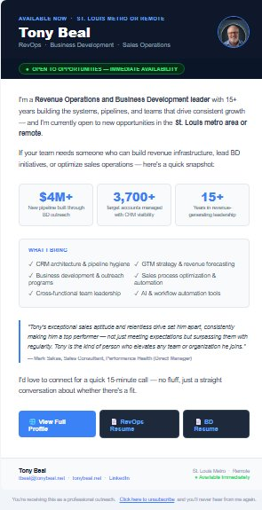
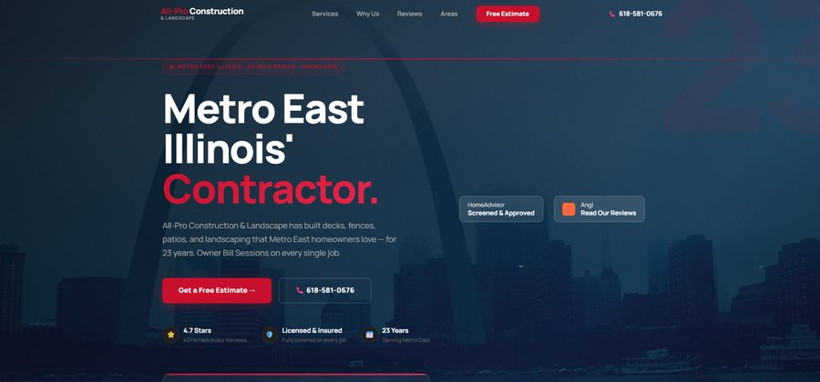

Revenue Operations | AI Sales Systems | Pipeline Generation | GTM Strategy
Tony Beal
I Build Revenue Systems That Turn
Industrial & B2B Target Accounts Into Pipeline
|
I design and deploy AI-driven outreach and RevOps systems that generate qualified pipeline, improve visibility, and accelerate revenue growth across industrial and B2B markets.
Open to full-time leadership roles or high-impact RevOps engagements · Remote Nationwide


What I Do
I don't rely on volume or generic outreach. I build targeted revenue systems that identify and prioritize high-value accounts, generate pipeline through structured outbound and content, improve CRM visibility and forecasting, and align marketing, sales, and operations into one system.
This is how cold markets turn into qualified opportunities — and it is how I have built $15M+ in pipeline across every market I have worked in.
"The most effective sales teams don't work harder — they build better systems."
Identify the exact companies and contacts most likely to convert.
Layer AI and data enrichment to surface buying signals.
Implement systematic outbound sequences at scale.
Role alignment
Built for These Roles
Every skill, system, and result mapped to the roles that need them most
Director of Revenue Operations
- CRM architecture, governance, and hygiene — Salesforce + HubSpot
- Marketing-to-revenue pipeline reporting and attribution
- GTM strategy design and cross-functional alignment
- Sales forecasting, velocity metrics, and stage conversion tracking
- RevOps infrastructure build — from zero to operating system
- MQL, SQL, and pipeline contribution dashboards
- Revenue tech stack evaluation and implementation
- Quota attainment tracking and sales capacity planning
Director of Marketing & Sales Operations
- StoryBrand brand positioning and messaging framework
- Demand generation, MQL creation, and pipeline attribution
- Email marketing automation — 20,000+ contact segmentation
- SEO strategy and website conversion optimization
- LinkedIn content strategy and executive thought leadership
- Marketing KPI dashboards with CRM-connected reporting
- Outbound + inbound program alignment
- AI-powered content tools and campaign personalization
Director of Business Development
- Net-new pipeline generation — $15M+ across industrial and B2B markets
- ICP definition, territory design, and account segmentation
- Outbound system architecture — email + LinkedIn + automation
- Account-based prospecting using LinkedIn Sales Navigator + Apollo.io
- Full-cycle B2B sales — discovery to close
- Cold market entry — 0 to 1,200+ active accounts from scratch
- AI-assisted account scoring and priority targeting
- Strategic partnership development and key account growth
AI Sales Systems & Revenue Automation
- OpenAI API integration for prospect intelligence and outreach
- 40,000+ AI prompts engineered for GTM and sales workflows
- Custom CRM backend integration via REST API architecture
- Python-based data pipelines for ICP scoring and territory mapping
- AI-powered outbound — reduced research time 60%+ at scale
- OpenClaw — custom AI platform for revenue automation
- Automated outreach personalization at 20,000+ contact scale
- Prompt engineering for sales, marketing, and operations workflows
VP / Director of Sales Operations
- Sales process design and rep productivity infrastructure
- CRM data integrity, pipeline hygiene, and forecasting accuracy
- Sales enablement — playbooks, sequences, and onboarding systems
- Territory planning and quota modeling
- Sales automation and outreach cadence design
- Revenue reporting — weekly, monthly, and board-level dashboards
- Cross-functional alignment: sales, marketing, finance, operations
- 8 consecutive years quota attainment — systems-driven execution
Tony Beal is an experienced Director of Revenue Operations, Director of Marketing and Sales Operations, Director of Business Development, Sales Operations Manager, and AI Revenue Systems Architect. Skills include CRM architecture Salesforce HubSpot, RevOps infrastructure, GTM strategy, pipeline generation, demand generation, MQL attribution, marketing automation, StoryBrand brand positioning, SEO website conversion, email marketing campaigns, LinkedIn content strategy, outbound automation, ICP targeting, account-based marketing, territory development, full-cycle B2B sales, AI-powered prospecting, OpenAI API integration, Python automation, REST API development, prompt engineering, revenue forecasting, quota attainment, sales enablement, cross-functional operations leadership, remote revenue operations, Greater St. Louis Missouri, industrial markets, manufacturing B2B, pharmaceutical distribution, food and beverage B2B, fractional RevOps, contract revenue leadership, pipeline generation consulting.
Selected Work
Systems and tools built for scalable B2B pipeline growth
TonyOS — Revenue Intelligence System
No unified view of pipeline health, account coverage, or outreach performance across 3,700+ target accounts.
A custom AI-powered revenue operations dashboard integrating prospecting, outreach tracking, and pipeline data into one command center.
$15M+ in cumulative pipeline tracked. 87% account coverage across manufacturing, pharma, and food & beverage verticals.

assets/screenshot-email-outreach.png
AI Email Outreach System
Production-ready HTML email template engineered for deliverability — 100% inline CSS, spam-safe structure, anti-spam triggers removed, and unsubscribe flow baked in.
Direct outreach to B2B decision-makers across manufacturing, construction, and industrial markets. Copy-paste into Gmail, Outlook, or Mailchimp.
Reusable system that puts a polished, branded email in front of target accounts in under 60 seconds.

assets/screenshot-allpro.png
Construction Company Web Build
All Pro Metro East Construction — full web presence design, build, and SEO infrastructure for a growing St. Louis area construction company.
Custom website with local SEO optimization, service pages, contact conversion architecture, and Google Business integration.
Production site live — built for local search discovery and service inquiry conversion in the St. Louis metro market.
AI Outreach Personalization Engine
Generic outreach at scale kills response rates. Manually personalizing for 3,700 accounts was not feasible for one operator.
AI personalization framework using 40,000+ engineered prompts to generate account-specific messaging at scale — ICP match, signal-based triggers, multi-step sequences.
Deployed across manufacturing, pharmaceutical, and food & beverage markets. Enabled one operator to run an enterprise-scale outbound program.
Proven Results
Built through targeted outreach systems — not volume, not luck
Pipeline generated through targeted outreach systems across industrial, manufacturing, pharmaceutical, and B2B markets
Target accounts identified, scored, and activated using AI-assisted account intelligence across 4 verticals
New customers acquired across B2B environments — from territory zero to enterprise-scale coverage through systematic outbound
LinkedIn audience built to 11,000+ followers with 300K+ impressions — authority and reach in revenue operations and B2B pipeline strategy
What I build
Revenue Systems I Build
The systems that turn target accounts into predictable pipeline
AI-Powered Prospecting Engines
Targeted account identification, segmentation, and outreach using LinkedIn Sales Navigator, Apollo.io, and AI. One operator at the throughput of a 5-person SDR team — without the noise.
Pipeline Generation Systems
Outbound and content workflows designed to create consistent opportunity flow. Multi-channel sequences with AI personalization — built for industrial, manufacturing, and B2B sales cycles that don't respond to spray-and-pray.
CRM & RevOps Infrastructure
Salesforce, HubSpot, and custom workflows for tracking, reporting, and forecasting. CRM-connected pipeline visibility that turns raw data into daily decision-ready metrics — coverage, velocity, forecast accuracy.
GTM Strategy Execution
Positioning, messaging, and targeting aligned to real revenue outcomes. ICP definition, territory mapping, and account segmentation built from real market data — not assumptions. Strategy that ships, not strategy that sits in a deck.
How I Improve Revenue Systems
A systematic approach to building scalable pipeline infrastructure
Audit existing sales data, identify bottlenecks, and map account territories
Design CRM architecture, ICP frameworks, and targeting systems
Deploy AI tools, data enrichment, and automated outbound sequences
Track KPIs, optimize conversion rates, and iterate on system performance
Tech Stack
Revenue Intelligence
The dashboards that tell the story leadership actually needs to see
Where I Win
The environments where my systems produce the fastest, most measurable results. If your market is on this list, we should talk.
Social proof & reach
Industry Visibility
Building authority and reach in revenue operations, AI sales systems, and B2B pipeline strategy
Open to the Right Opportunity
Tony is open to remote opportunities helping companies nationwide build revenue systems
Greater St. Louis | Remote | Hybrid | Open to Relocate
What others say
LinkedIn Recommendations
14 recommendations from managers, colleagues, and clients across manufacturing, pharma, and B2B sales
Engagement models
Ways I Help Companies Grow
Available for full-time leadership, fractional RevOps, or revenue system implementation projects
Full-Time Revenue Leadership
Director-level Revenue Operations, Sales Operations, or Business Development leadership. Remote-first. Available immediately.
- Director of Revenue Operations
- Sales Operations Leadership
- Director of Business Development
- RevOps Strategy & AI Systems
Fractional RevOps
Part-time embedded revenue operations leadership for scaling companies that need systems without a full-time hire.
- Pipeline system design
- CRM architecture and optimization
- Sales process mapping
- Revenue reporting dashboards
Revenue System Implementation
Build AI-powered lead generation engines, outbound automation, and pipeline intelligence systems from scratch.
- AI prospecting engine setup
- LinkedIn + Apollo targeting system
- Outbound automation workflows
- Pipeline intelligence dashboards
Strategic perspective
Thinking
Frameworks and opinions on where revenue growth is actually won
AI Will Not Replace Sales. It Will Replace Bad Sales Systems.
The reps who thrive aren't the ones fighting AI — they're the ones who build systems around it. The real advantage is infrastructure, not effort.
Why Most Outbound Fails Before the First Email Is Sent
Outbound doesn't fail at execution — it fails at targeting. The wrong ICP, the wrong accounts, the wrong timing. Fix the list first, then fix the message.
The Real Bottleneck in Revenue Teams Isn't Effort. It's Infrastructure.
Most revenue teams work hard. Few have the systems to show for it. CRM hygiene, pipeline visibility, and account intelligence are what separate consistent performers from inconsistent ones.
Free Resource
Get My AI Prospecting Playbook
The exact system I used to build $15M+ in pipeline — sequences, targeting logic, and AI prompts. Yours free.
No spam. One email. Unsubscribe anytime.
In your own words
How Tony Answers the Hard Questions
Five questions every hiring committee asks — answered directly. No spin, no filler.
01 "Tell me about yourself." +
I am a Marketing and Sales Operations leader with 15 years of B2B experience building revenue systems at the intersection of brand strategy, pipeline generation, and commercial technology. At Natoli Engineering, I built the full stack: StoryBrand brand positioning, marketing dashboards, email campaigns to 20,000+ contacts, LinkedIn content strategy, AI-powered market scanning tools using the OpenAI API, and a custom CRM backend integration. At Proform Manufacturing, I built $6M+ in pipeline from zero. I have managed 3,700+ accounts, hit quota for eight consecutive years, and grown a LinkedIn presence to 11,000+ followers with over 300,000 impressions.
What I bring is simple: I connect marketing activity to revenue outcomes — and I have the systems and track record to prove it works.
02 "What makes you different from other marketing leaders?" +
Most marketing directors understand campaigns. I understand how campaigns connect to closed revenue. I have built the CRM architecture that tracks every touchpoint from first impression to signed contract. I have applied StoryBrand to sharpen brand positioning. I run SEO on live digital properties. I have grown social reach to 11,000+ followers. I built websites from the backend up and executed email campaigns to 20,000+ contacts.
What I bring that a traditional marketing director often cannot: hard accountability to revenue outcomes. Every program gets measured. Every dollar earns its place.
03 "What is your leadership style?" +
High standards, low drama. I build clear systems, set clear expectations, and give my team autonomy to execute. I do not micromanage creative decisions — I set strategic direction and get out of the way. I step back in when data tells me something needs to change.
I have been described as direct, decisive, and development-oriented. I genuinely invest in the people I lead, and I believe a focused two-person team with the right systems can outperform a ten-person team operating without clarity.
04 "How do you approach a new role in the first 90 days?" +
Listen first. I spend the first 30 days understanding the existing pipeline, the CRM state, the ICP, and where the real friction is — before committing to a plan. Most teams already know what is broken. They need someone to build the fix, not just name it.
Days 31–90: I build the foundation. CRM architecture, ICP targeting, outbound sequences, and a reporting dashboard that tells the story the leadership team actually needs to see. By day 90, we have a system running and measurable data coming in.
05 "Where do you see the biggest revenue opportunity for most B2B companies?" +
Three places. First, brand clarity — most B2B companies have unclear messaging that forces prospects to work too hard to understand the value proposition. StoryBrand fixes this fast. Second, website conversion — most B2B websites have traffic but no conversion infrastructure. Fixing CTAs, persona-aligned content, and CRM tracking turns existing traffic into pipeline immediately. Third, MQL-to-pipeline visibility — connecting every marketing activity to pipeline data so leadership can see exactly where revenue is coming from and where to invest next.
These three together compound. They are not theory — they are how I have built $15M+ in pipeline across every market I have worked in.
If You Need Pipeline, Not Just Activity
Let's talk. Tony is available for full-time leadership roles or high-impact RevOps engagements with companies nationwide.
Greater St. Louis · Remote Nationwide · Available Immediately
Reach Out Directly